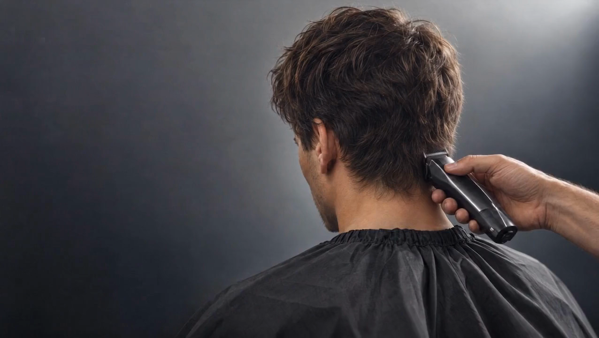

Что меняем
Длину, контур, форму бороды или весь образ.

Новый образ. Новое ощущение себя.
Кемерово, ул. Кирова, 18Позвоните и коротко опишите желаемую форму. По телефону можно уточнить время и детали записи.
Длину, контур, форму бороды или весь образ.
Привычную укладку, длину или детали, которые вам подходят.
Назовите подходящий день. Свободное время уточнит салон.
Форма стрижки, аккуратный контур и детали ухода.